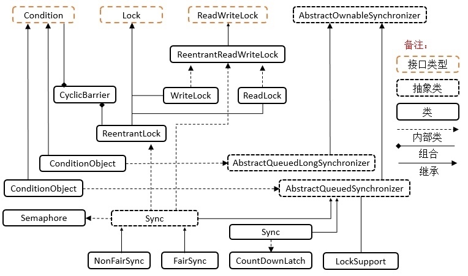
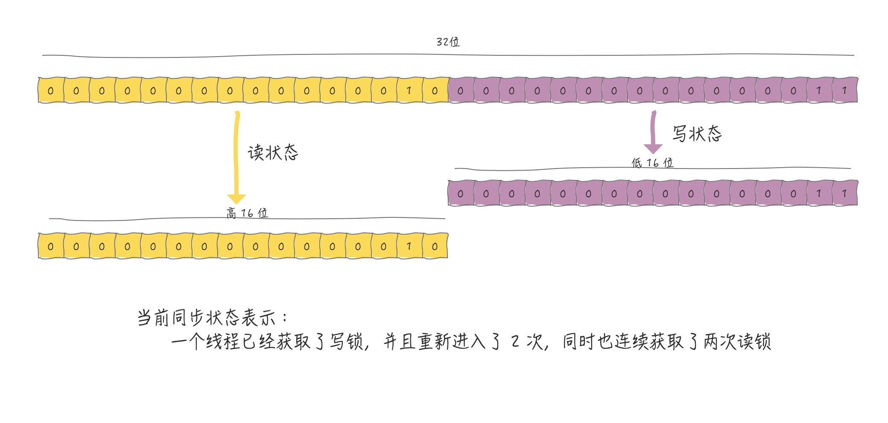
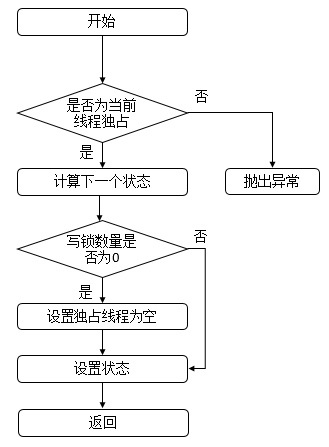
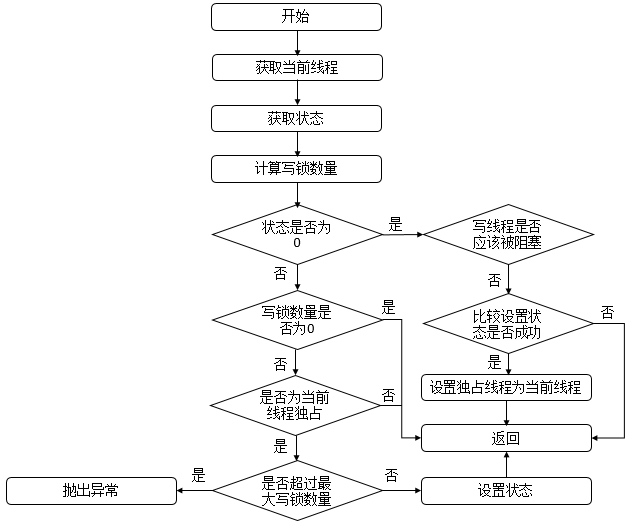
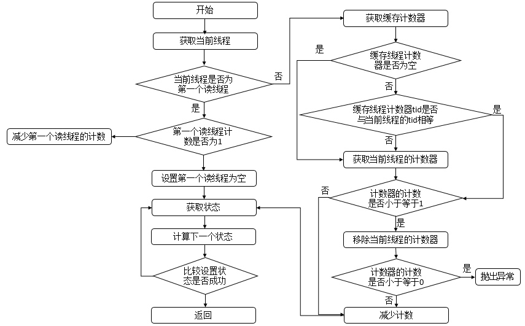
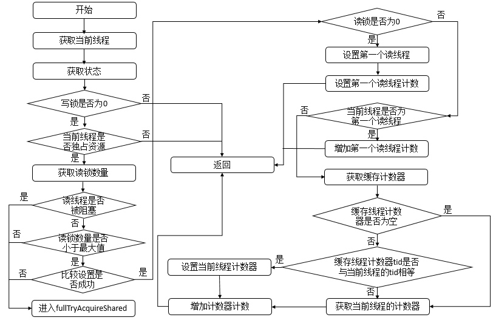

为什么有了ReentrantLock 还需要 ReentrantReadWriteLock?
ReentrantReadWriteLock底层实现原理?
ReentrantReadWriteLock底层读写状态如何设计的? 高16位为读锁，低16位为写锁
读锁和写锁的最大数量是多少?
本地线程计数器ThreadLocalHoldCounter是用来做什么的?
缓存计数器HoldCounter是用来做什么的?
写锁的获取与释放是怎么实现的?
读锁的获取与释放是怎么实现的?
ReentrantReadWriteLock为什么不支持锁升级? 是否可以将写锁降级为读锁？ 是否可以优先于其他正在等待的读取器或写入器将读取锁升级为写入锁
什么是锁的升降级?
ReentrantReadWriteLock 是否可重入? 具有写锁的线程可以重新获取它吗？ 持有写锁的同时可以获取读锁吗？ 读锁本身是否可重入？
ReentrantReadWriteLock锁最多支持65535个递归写锁和65535个读锁。 尝试超过这些限制会导致锁定方法引发Error
ReentrantReadWriteLock 类结构

ReadWriteLock 读写锁接口只定义了获取读锁和写锁两个接口方法，需要具体实现类ReentrantReadWriteLock实现
ReentrantReadWriteLock 读写锁的设计思想
读写锁状态的设计
读写锁依赖自定义同步器来实现同步功能，而读写状态就是其同步器的同步状态。
回想 ReentrantLock 中自定义同步器的实现，同步状态表示锁被一个线程重复获取的次数，而读写锁的自定义同步器需要在同步状态(一个整型变量)上维护多个读线程和一个写线程的状态，使得该状态的设计成为读写锁实现的关键。
如果在一个整型变量上维护多种状态，就一定需要“按位切割使用”这个变量，读写锁将变量切分成了两个部分，高 16 位表示读，低 16 位表示写，读写锁是如何迅速确定读和写各自的状态呢?
答案是通过位运算。假设当前同步状态值为 S，写状态等于 S&0x0000FFFF (将高 16 位全部抹去)，读状态等于 S>>>16(无符号补 0 右移 16 位)。当写状态增加 1 时，等于 S+1，当读状态增加 1 时，等于 S+(1<<16)，也就是 S+0x00010000。 根据状态的划分能得出一个推论:S 不等于 0 时，当写状态(S&0x0000FFFF)等于 0 时，则读状态(S>>>16)大于 0，即读锁已被获取。
abstract static class Sync extends AbstractQueuedSynchronizer {
// 第一个读锁记录
private transient Thread firstReader = null;
private transient int firstReaderHoldCount;
/**
* 高16位表示读状态，低16位表示写状态，
* 这几个变量用于计算读写状态
*/
static final int SHARED_SHIFT = 16;
static final int SHARED_UNIT = (1 << SHARED_SHIFT);
static final int MAX_COUNT = (1 << SHARED_SHIFT) - 1;
static final int EXCLUSIVE_MASK = (1 << SHARED_SHIFT) - 1;
/** 返回占有读锁的线程数量 */
static int sharedCount(int c) { return c >>> SHARED_SHIFT; }
/** 返回占有写锁的线程数量 */
static int exclusiveCount(int c) { return c & EXCLUSIVE_MASK; }
}
sharedCount 方法直接将state右移16位，就可以得到读锁的线程数量(线程每重入一次也算一次读锁)，因为state的高16位表示读锁，对应的低十六位表示写锁数量。
exclusiveCount 方法直接将状态 state 和 (216 - 1) 做与运算，其等效于将 state 模上 216。写锁数量由state的低十六位表示。

写锁的获取与释放
写锁是一个支持重进入的排它锁 。如果当前线程已经获取了写锁，则增加写状态。如果当前线程在获取写锁时，读锁已经被获取(读状态不为 0)或者该线 程不是已经获取写锁的线程，则当前线程进入等待状态。
该方法除了重入条件(当前线程为获取了写锁的线程)之外，增加了一个读锁是否存在的判断。如果存在读锁，则写锁不能被获取，原因在于: 读写锁要确保写锁的操作对读锁可见，如果允许读锁在已被获取的情况下对写锁的获取，那么正在运行的其他读线程就无法感知到当前写线程的操作。因此，只有等待其他 读线程都释放了读锁，写锁才能被当前线程获取，而写锁一旦被获取，则其他读 写线程的后续访问均被阻塞。
写锁的释放与 ReentrantLock 的释放过程基本类似，每次释放均减少写状态， 当写状态为 0 时表示写锁已被释放，从而等待的读写线程能够继续访问读写锁， 同时前次写线程的修改对后续读写线程可见。
读锁的获取与释放
读锁是一个支持重进入的共享锁 ，它能够被多个线程同时获取，在没有其他 写线程访问(或者写状态为 0)时，读锁总会被成功地获取，而所做的也只是(线程安全的)增加读状态。如果当前线程已经获取了读锁，则增加读状态。
如果当前线程在获取读锁时，写锁已被其他线程获取，则进入等待状态。读状态是所有线程获取读锁次数的总和，而每个线程各自获取读锁的次数只能选择保存在 ThreadLocal 中，由线程自身维护。在 tryAcquireShared(int unused)方法中， 如果其他线程已经获取了写锁，则当前线程获取读锁失败，进入等待状态。如果 当前线程获取了写锁或者写锁未被获取，则当前线程(线程安全，依靠 CAS 保证) 增加读状态，成功获取读锁。读锁的每次释放(线程安全的，可能有多个读线程 同时释放读锁)均减少读状态。
锁的升降级
锁降级指的是写锁降级成为读锁。如果当前线程拥有写锁，然后将其释放，最后再获取读锁，这种分段完成的过程不能称之为锁降级。
锁降级是指把持住(当前拥有的)写锁，再获取到读锁，随后释放(先前拥有的)写锁的过程。
// jdk 自带示例
public void processData() {
readLock.lock();
if (!update) {
// 必须先释放读锁
readLock.unlock();
// 锁降级从写锁获取到开始
writeLock.lock();
try {
if (!update) {
// 准备数据的流程(略)
update = true;
}
readLock.lock();
} finally {
writeLock.unlock();
}
// 锁降级完成，写锁降级为读锁
}
try {
// 使用数据的流程(略)
} finally {
readLock.unlock();
}
}
锁降级中读锁的获取是否必要呢? 答案是必要的。主要是为了保证数据的可见性，如果当前线程不获取读锁而是直接释放写锁，假设此刻另一个线程(记作线程T)获取了写锁并修改了数据，那么当前线程无法感知线程T的数据更新。如果当前线程获取读锁，即遵循锁降级的步骤，则线程T将会被阻塞，直到当前线程使用数据并释放读锁之后，线程T才能获取写锁进行数据更新。
ReentrantReadWriteLock 不支持锁升级(把持读锁、获取写锁，最后释放读锁的过程)。目的是保证数据可见性，如果读锁已被多个线程获取，其中任意线程成功获取了写锁并更新了数据，则其更新对其他获取到读锁的线程是不可见的。
ReentrantReadWriteLock 底层源码分析
通过源码我们可知道，读写锁的内部类有实现了Lock接口的 WriteLock、ReadLock 和 实现了 AbstractQueuedSynchronizer 接口的 Sync、NonfairSync 、FairSyn。
ReentrantReadWriteLock 属性
可以看到ReentrantReadWriteLock属性包括了一个ReentrantReadWriteLock.ReadLock对象，表示读锁；一个ReentrantReadWriteLock.WriteLock对象，表示写锁；一个Sync对象，表示同步队列
public class ReentrantReadWriteLock
implements ReadWriteLock, java.io.Serializable {
// 版本序列号
private static final long serialVersionUID = -6992448646407690164L;
// 读锁
private final ReentrantReadWriteLock.ReadLock readerLock;
// 写锁
private final ReentrantReadWriteLock.WriteLock writerLock;
// 同步队列
final Sync sync;
private static final sun.misc.Unsafe UNSAFE;
// 线程ID的偏移地址
private static final long TID_OFFSET;
static {
try {
UNSAFE = sun.misc.Unsafe.getUnsafe();
Class<?> tk = Thread.class;
// 获取线程的tid字段的内存地址
TID_OFFSET = UNSAFE.objectFieldOffset
(tk.getDeclaredField("tid"));
} catch (Exception e) {
throw new Error(e);
}
}
}
ReentrantReadWriteLock 构造函数
可以指定设置公平策略或者非公平策略，并且该构造函数中生成了读锁与写锁两个对象。
public ReentrantReadWriteLock(boolean fair) {
// 公平策略或者是非公平策略
sync = fair ? new FairSync() : new NonfairSync();
// 读锁
readerLock = new ReadLock(this);
// 写锁
writerLock = new WriteLock(this);
}
Sync同步器
Sync 属性
abstract static class Sync extends AbstractQueuedSynchronizer {
// 版本序列号
private static final long serialVersionUID = 6317671515068378041L;
// 高16位为读锁，低16位为写锁
static final int SHARED_SHIFT = 16;
// 读锁单位
static final int SHARED_UNIT = (1 << SHARED_SHIFT);
// 读锁最大数量
static final int MAX_COUNT = (1 << SHARED_SHIFT) - 1;
// 写锁最大数量
static final int EXCLUSIVE_MASK = (1 << SHARED_SHIFT) - 1;
// 本地线程计数器
private transient ThreadLocalHoldCounter readHolds;
// 线程重入的计数器
private transient HoldCounter cachedHoldCounter;
// 第一个读线程
private transient Thread firstReader = null;
// 第一个读线程的计数
private transient int firstReaderHoldCount;
// 构造函数
Sync() {
// 本地线程计数器
readHolds = new ThreadLocalHoldCounter();
// 设置AQS的状态
setState(getState());
}
// 计数器
static final class HoldCounter {
// 某个线程重入计数
int count = 0;
// Use id, not reference, to avoid garbage retention
// 获取当前线程的TID属性的值
final long tid = getThreadId(Thread.currentThread());
}
// 本地线程计数器
static final class ThreadLocalHoldCounter
extends ThreadLocal<HoldCounter> {
// 重写初始化方法，在没有进行set的情况下，获取的都是该HoldCounter值
public HoldCounter initialValue() {
return new HoldCounter();
}
}
}
HoldCounter主要有两个属性，count和tid，其中count表示某个读线程重入的次数，tid表示该线程的tid字段的值，该字段可以用来唯一标识一个线程。
ThreadLocalHoldCounter重写了ThreadLocal的initialValue方法，ThreadLocal类可以将线程与对象相关联。在没有进行 set 的情况下，get到的均是initialValue方法里面生成的那个 HolderCounter 对象。
tryRelease 释放写锁资源
释放写锁资源，首先会判断该线程是否为独占线程，若不为独占线程，则抛出异常，否则，计算释放资源后的写锁的数量，若为0，表示成功释放，资源不将被占用，否则，表示资源还被占用。

protected final boolean tryRelease(int releases) {
// 判断是否伪独占线程
if (!isHeldExclusively())
throw new IllegalMonitorStateException();
// 计算释放资源后的写锁的数量
int nextc = getState() - releases;
// 计算占有写锁的线程数量是否等于0，如果等于0 则没有任何线程持有状态写资源
boolean free = exclusiveCount(nextc) == 0; // 是否释放成功
if (free)
setExclusiveOwnerThread(null); // 设置独占线程为空
setState(nextc); // 设置状态
return free;
}
tryAcquire(int acquires) 函数

protected final boolean tryAcquire(int acquires) {
// 获取当前线程
Thread current = Thread.currentThread();
// 获取状态
int c = getState();
// 写线程数量
int w = exclusiveCount(c);
if (c != 0) { // 状态不为0
// (Note: if c != 0 and w == 0 then shared count != 0)
if (w == 0 || current != getExclusiveOwnerThread()) // 写线程数量为0或者当前线程没有占有独占资源
return false;
if (w + exclusiveCount(acquires) > MAX_COUNT) // 判断是否超过最高写线程数量
throw new Error("Maximum lock count exceeded");
// Reentrant acquire
// 设置AQS状态
setState(c + acquires);
return true;
}
if (writerShouldBlock() ||
!compareAndSetState(c, c + acquires)) // 写线程是否应该被阻塞
return false;
// 设置独占线程
setExclusiveOwnerThread(current);
return true;
}
此函数用于获取写锁，首先会获取state，判断是否为0，若为0，表示此时没有读锁线程，再判断写线程是否应该被阻塞，而在非公平策略下总是不会被阻塞，在公平策略下会进行判断(判断同步队列中是否有等待时间更长的线程，若存在，则需要被阻塞，否则，无需阻塞)，之后在设置状态state，然后返回true。若state不为0，则表示此时存在读锁或写锁线程，若写锁线程数量为0或者当前线程为独占锁线程，则返回false，表示不成功，否则，判断写锁线程的重入次数是否大于了最大值，若是，则抛出异常，否则，设置状态state，返回true，表示成功。
tryReleaseShared 函数
protected final boolean tryReleaseShared(int unused) {
// 获取当前线程
Thread current = Thread.currentThread();
if (firstReader == current) { // 当前线程为第一个读线程
// assert firstReaderHoldCount > 0;
if (firstReaderHoldCount == 1) // 读线程占用的资源数为1
firstReader = null;
else // 减少占用的资源
firstReaderHoldCount--;
} else { // 当前线程不为第一个读线程
// 获取缓存的计数器
HoldCounter rh = cachedHoldCounter;
if (rh == null || rh.tid != getThreadId(current)) // 计数器为空或者计数器的tid不为当前正在运行的线程的tid
// 获取当前线程对应的计数器
rh = readHolds.get();
// 获取计数
int count = rh.count;
if (count <= 1) { // 计数小于等于1
// 移除
readHolds.remove();
if (count <= 0) // 计数小于等于0，抛出异常
throw unmatchedUnlockException();
}
// 减少计数
--rh.count;
}
for (;;) { // 无限循环
// 获取状态
int c = getState();
// 获取状态
int nextc = c - SHARED_UNIT;
if (compareAndSetState(c, nextc)) // 比较并进行设置
// Releasing the read lock has no effect on readers,
// but it may allow waiting writers to proceed if
// both read and write locks are now free.
return nextc == 0;
}
}

此函数表示读锁线程释放锁。首先判断当前线程是否为第一个读线程firstReader，若是，则判断第一个读线程占有的资源数firstReaderHoldCount是否为1，若是，则设置第一个读线程firstReader为空，否则，将第一个读线程占有的资源数firstReaderHoldCount减1；若当前线程不是第一个读线程，那么首先会获取缓存计数器(上一个读锁线程对应的计数器 )，若计数器为空或者tid不等于当前线程的tid值，则获取当前线程的计数器，如果计数器的计数count小于等于1，则移除当前线程对应的计数器，如果计数器的计数count小于等于0，则抛出异常，之后再减少计数即可。无论何种情况，都会进入无限循环，该循环可以确保成功设置状态state。
tryAcquireShared 函数
private IllegalMonitorStateException unmatchedUnlockException() {
return new IllegalMonitorStateException(
"attempt to unlock read lock, not locked by current thread");
}
// 共享模式下获取资源
protected final int tryAcquireShared(int unused) {
/*
* Walkthrough:
* 1. If write lock held by another thread, fail.
* 2. Otherwise, this thread is eligible for
* lock wrt state, so ask if it should block
* because of queue policy. If not, try
* to grant by CASing state and updating count.
* Note that step does not check for reentrant
* acquires, which is postponed to full version
* to avoid having to check hold count in
* the more typical non-reentrant case.
* 3. If step 2 fails either because thread
* apparently not eligible or CAS fails or count
* saturated, chain to version with full retry loop.
*/
// 获取当前线程
Thread current = Thread.currentThread();
// 获取状态
int c = getState();
if (exclusiveCount(c) != 0 &&
getExclusiveOwnerThread() != current) // 写线程数不为0并且占有资源的不是当前线程
return -1;
// 读锁数量
int r = sharedCount(c);
if (!readerShouldBlock() &&
r < MAX_COUNT &&
compareAndSetState(c, c + SHARED_UNIT)) { // 读线程是否应该被阻塞、并且小于最大值、并且比较设置成功
if (r == 0) { // 读锁数量为0
// 设置第一个读线程
firstReader = current;
// 读线程占用的资源数为1
firstReaderHoldCount = 1;
} else if (firstReader == current) { // 当前线程为第一个读线程
// 占用资源数加1
firstReaderHoldCount++;
} else { // 读锁数量不为0并且不为当前线程
// 获取计数器
HoldCounter rh = cachedHoldCounter;
if (rh == null || rh.tid != getThreadId(current)) // 计数器为空或者计数器的tid不为当前正在运行的线程的tid
// 获取当前线程对应的计数器
cachedHoldCounter = rh = readHolds.get();
else if (rh.count == 0) // 计数为0
// 设置
readHolds.set(rh);
rh.count++;
}
return 1;
}
return fullTryAcquireShared(current);
}

此函数表示读锁线程获取读锁。首先判断写锁是否为0并且当前线程不占有独占锁，直接返回；否则，判断读线程是否需要被阻塞并且读锁数量是否小于最大值并且比较设置状态成功，若当前没有读锁，则设置第一个读线程firstReader和firstReaderHoldCount；若当前线程线程为第一个读线程，则增加firstReaderHoldCount；否则，将设置当前线程对应的HoldCounter对象的值。
在tryAcquireShared函数中，如果下列三个条件不满足(读线程是否应该被阻塞、小于最大值、比较设置成功)则会进行fullTryAcquireShared函数中，它用来保证相关操作可以成功
fullTryAcquireShared 函数
final int fullTryAcquireShared(Thread current) {
/*
* This code is in part redundant with that in
* tryAcquireShared but is simpler overall by not
* complicating tryAcquireShared with interactions between
* retries and lazily reading hold counts.
*/
HoldCounter rh = null;
for (;;) { // 无限循环
// 获取状态
int c = getState();
if (exclusiveCount(c) != 0) { // 写线程数量不为0
if (getExclusiveOwnerThread() != current) // 不为当前线程
return -1;
// else we hold the exclusive lock; blocking here
// would cause deadlock.
} else if (readerShouldBlock()) { // 写线程数量为0并且读线程被阻塞
// Make sure we're not acquiring read lock reentrantly
if (firstReader == current) { // 当前线程为第一个读线程
// assert firstReaderHoldCount > 0;
} else { // 当前线程不为第一个读线程
if (rh == null) { // 计数器不为空
//
rh = cachedHoldCounter;
if (rh == null || rh.tid != getThreadId(current)) { // 计数器为空或者计数器的tid不为当前正在运行的线程的tid
rh = readHolds.get();
if (rh.count == 0)
readHolds.remove();
}
}
if (rh.count == 0)
return -1;
}
}
if (sharedCount(c) == MAX_COUNT) // 读锁数量为最大值，抛出异常
throw new Error("Maximum lock count exceeded");
if (compareAndSetState(c, c + SHARED_UNIT)) { // 比较并且设置成功
if (sharedCount(c) == 0) { // 读线程数量为0
// 设置第一个读线程
firstReader = current;
//
firstReaderHoldCount = 1;
} else if (firstReader == current) {
firstReaderHoldCount++;
} else {
if (rh == null)
rh = cachedHoldCounter;
if (rh == null || rh.tid != getThreadId(current))
rh = readHolds.get();
else if (rh.count == 0)
readHolds.set(rh);
rh.count++;
cachedHoldCounter = rh; // cache for release
}
return 1;
}
}
}